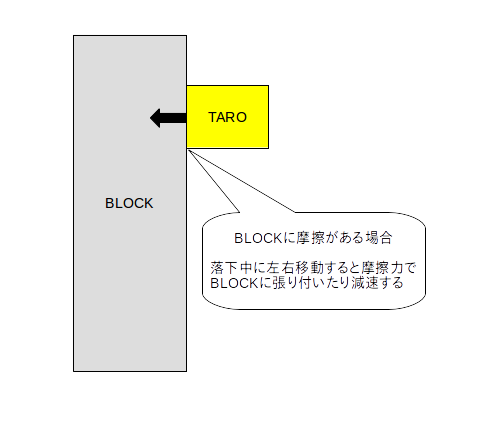
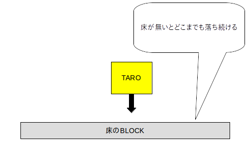

このスプリントでは、「BLOCK」オブジェクトを作成します。またオブジェクトをコピーして複数配置します
※1 摩擦と弾性を 0 にしておかないと TARO が重力で落下中に左右移動すると摩擦力で BLOCK の脇に張り付いたり減速したりします(下図)。

※2 床が無いと「TARO」はいつまでも落ち続けます(下図)。

プロジェクト「UNITY-2」に対して作業を続けます。
画像を用意し「BLOCK」に名前変更して下さい(※ 拡張子は変更しないよう注意)。
画像を「BLCOK」オブジェクト化して下さい。サイズは適宜変更して下さい。位置は後で動かすので適当で結構です。
「BLOCK」オブジェクトに Box Collider 2D をアタッチして下さい。衝突範囲は適宜調整して下さい。
「SLIP」マテリアルを新規作成して下さい( Physics Material ではなくて Physics Material 2D にするのを間違わないこと)。
「SLIP」マテリアルをクリックし、 Friction(摩擦) と Bounciness(弾性)を 0 にします。
Hierarchy ウィンドウで「BLOCK」オブジェクトをクリックし、 Inspector ウィンドウの Box Collider 2D の Material に「SLIP」マテリアルを DnD します。
「BLOCK」のレイヤーを「LayerBlock」として下さい。
「BLOCK」のタグを「TagBlock」として下さい。
Hierarchy ウィンドウで「BLOCK」オブジェクトをクリックし、右クリックメニューか Ctrl+C でコピーします。
Hierarchy ウィンドウで右クリックメニューか Ctrl+v で貼り付けます。
コピーしたオブジェクトの位置を移動します。
以上の操作を何回か繰り返します。ただし、表示画面の横方向いっぱいに引き伸ばした「BLOCK」を床として画面下部に必ず配置して下さい。
実行ボタンを押して動作確認して下さい。
上手く動作しなかった場合は実行ボタンを押して動作を止めてデバッグして下さい。
今回は提出物はありません。